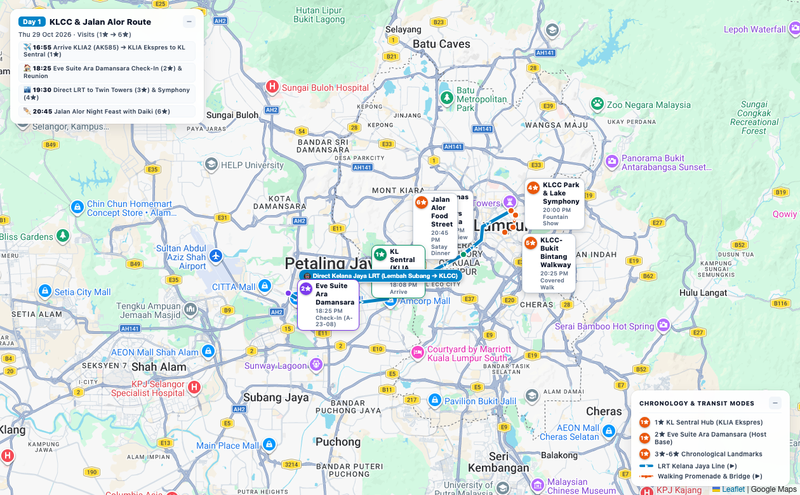
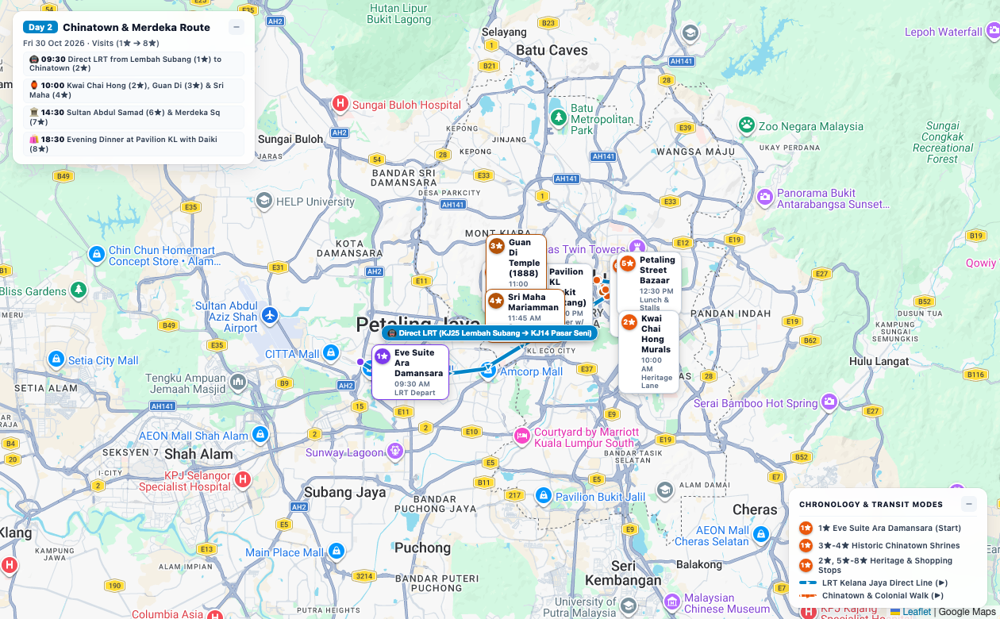
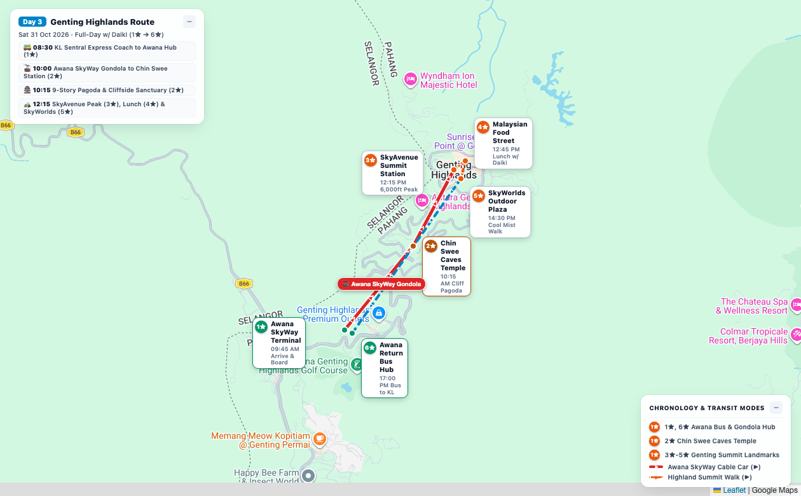
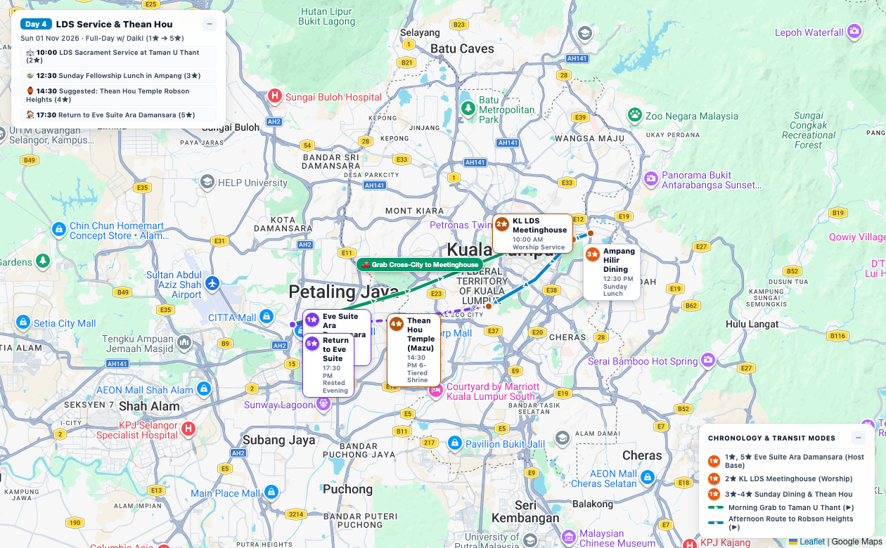
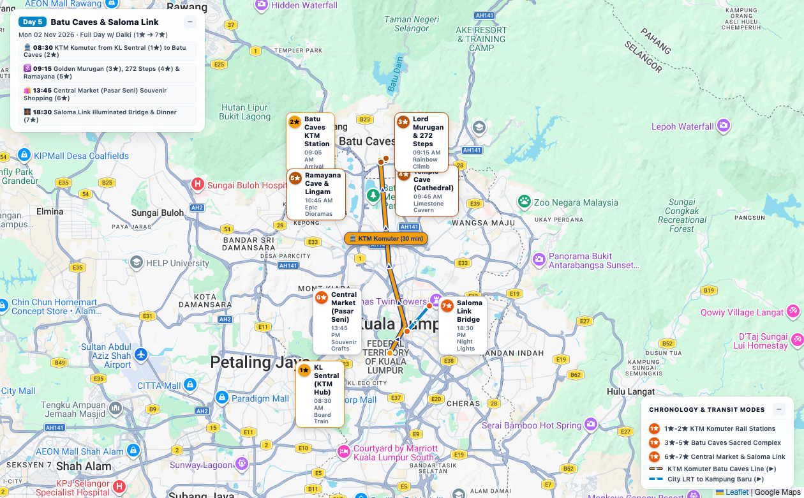
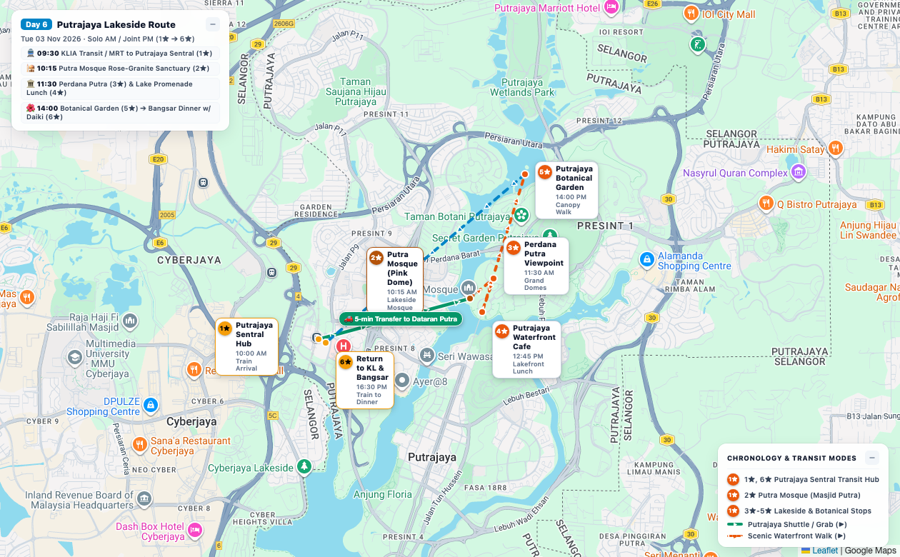
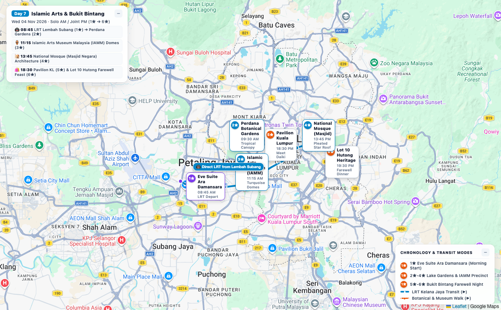
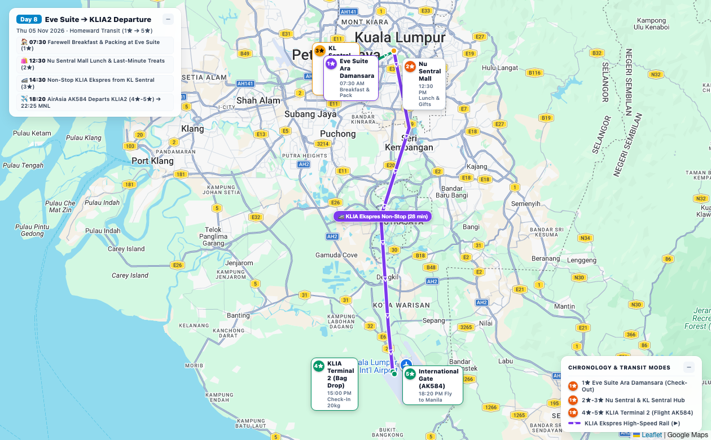

Click any day in the calendar grid, city dot, or sight star to explore! (Click any pin to inspect live Google Reviews & nearby places)
Complete chronological day-by-day itinerary with bulleted activities, verified transport connections, and itemized cost estimates.
| Day | Location (Exact Place / Store / Landmark) | Action / Activity | Cost (Itemized & Daily Total) |
|---|---|---|---|
|
Day 1
Thu, 29 Oct 2026
Afternoon Arrival & Reunion
|
Kuala Lumpur & KLCC Precinct
🏙️ Modern Metropolis & Golden Triangle Sunset

🗺️ Route Map (1★ ➔ 6★)
Tap to explore ➔
|
|
KLIA Ekspres: RM 55.00
Grab / LRT to Eve Suite: RM 15.00
LRT to KLCC: RM 3.30
Jalan Alor Dinner: RM 35.00
RM 108.30
(₱1,430 PHP)
|
|
Day 2
Fri, 30 Oct 2026
Solo AM / Joint PM
|
Chinatown & Colonial Heritage District
🏮 Old Malaya Heritage, Guild Temples & River of Life

🗺️ Route Map (1★ ➔ 8★)
Tap to explore ➔
|
|
RapidKL Transit: RM 5.60
Chinatown Snacks: RM 12.00
Heritage Lunch: RM 18.00
Refreshments: RM 10.00
Dinner with Daiki: RM 40.00
RM 85.60
(₱1,130 PHP)
|
|
Day 3
Sat, 31 Oct 2026
Full-Day Mountain Trip
|
Titiwangsa Mountains (Genting Highlands)
🚠 Highland Scenic Escape · Breezy Mountain Gondola & Cloud Mist Pagoda

🗺️ Route Map (1★ ➔ 6★)
Tap to explore ➔
|
|
KL ⇄ Awana Coach: RM 20.00
Awana SkyWay Gondola: RM 18.00
Chin Swee Entry: Free
Mountain Lunch: RM 45.00
Weekend Dinner: RM 40.00
RM 123.00
(₱1,624 PHP)
|
|
Day 4
Sun, 01 Nov 2026
Sunday LDS Worship
|
Taman U Thant & Robson Heights
✨ Sacred LDS Sunday Worship · Kuala Lumpur Branch Sabbath Service & Suggested Afternoon Option

🗺️ Route Map (1★ ➔ 5★)
Tap to explore ➔
|
|
Grab to Church & Temple: RM 35.00
Fellowship Lunch (Est): RM 35.00
Thean Hou Entry: Free
Evening Sabbath Meal (Est): RM 35.00
RM 105.00
(₱1,386 PHP)
|
|
Day 5
Mon, 02 Nov 2026
Joint & Flexible with Daiki
|
Gombak Limestone Caves & City Center
🪔 Spiritual & Geological Wonder · Ancient Limestone Caverns & Flexible Exploration with Daiki

🗺️ Route Map (1★ ➔ 7★)
Tap to explore ➔
|
|
KTM Komuter Return: RM 5.20
Main Cave Entry: Free
Ramayana Cave: RM 5.00
Indian Thali Lunch: RM 20.00
LRT / Monorail: RM 4.00
Dinner with Daiki: RM 55.00
RM 89.20
(₱1,177 PHP)
|
|
Day 6
Tue, 03 Nov 2026
Solo AM / Joint PM
|
Putrajaya Administrative Center & Lakeside
🕌 Federal Administrative Jewel · Rose-Granite Lakeside Mosque & Waterfront Gardens

🗺️ Route Map (1★ ➔ 6★)
Tap to explore ➔
|
|
Local Breakfast: RM 14.00
Transit to Putrajaya: RM 18.80
Putra Mosque Entry: Free
Botanical Garden: Free
Waterfront Lunch: RM 24.00
Dinner in Bangsar: RM 42.00
RM 98.80
(₱1,304 PHP)
|
|
Day 7
Wed, 04 Nov 2026
Solo AM / Joint PM
|
Perdana Lake Gardens & Bukit Bintang
🌿 Botanical Heritage & Islamic Arts · Southeast Asia's Premier Museum & Vibrant Bukit Bintang

🗺️ Route Map (1★ ➔ 6★)
Tap to explore ➔
|
|
RapidKL Transit: RM 5.60
Perdana Gardens Entry: Free
Islamic Arts Museum: RM 20.00
Nasi Kandar Lunch: RM 16.00
Dinner with Daiki: RM 50.00
RM 91.60
(₱1,209 PHP)
|
|
Day 8
Thu, 05 Nov 2026
Farewell & Departure
|
KL City Center & Sepang Gateway
✈️ Homeward Transit · AirAsia Flight AK584 Departure to Manila

🗺️ Route Map (1★ ➔ 5★)
Tap to explore ➔
|
|
Farewell Breakfast: RM 15.00
Lunch & Refreshments: RM 25.00
KLIA Ekspres: RM 55.00
Airport Snack: RM 20.00
RM 115.00
(₱1,518 PHP)
|
| 🏢 Residence: | Eve Suite Ara Damansara (Unit A-23-08) |
| 📍 Address: | Jalan PJU 1A/41, 47301 Petaling Jaya, Selangor |
| 🚇 LRT Access: | Direct covered bridge to Lembah Subang LRT (KJ25) |
| 🚄 Direct Route: | Kelana Jaya Line direct to KL Sentral, Pasar Seni & KLCC |
| 🗺️ Google Maps: | Open Eve Suite in Google Maps ↗ |
| ✈️ AirAsia Portal: | airasia.com (Booking: PG8J4A) |
| 🚠 Awana SkyWay Gondola: | rwgenting.com/awana-skyway |
| 🚆 KTM Komuter (Batu Caves): | ktmb.com.my (KL Sentral ⇄ Batu Caves) |
| 🚄 KLIA Ekspres Train: | kliaekspres.com (28-min express) |
| 🏛️ LDS Meetinghouse: | No. 4 Jalan Ampang Tengah (10:00 AM) |